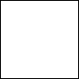

<!DOCTYPE HTML PUBLIC "-//W3C//DTD HTML 4.01 Transitional//EN"
        "http://www.w3.org/TR/html4/loose.dtd">
<!--3 при помощи двух цыклов сделать шахматную доску с двух квадратов( черного и белого) -->
<html>
<head>
    <meta charset="UTF-8">
    <title>Chess board</title>
    <script type="text/javascript">
        // Создание многомерного массива.
        var table = new Array(8);
        for (var i = 0; i < table.length; i++) { // В таблице 8 строк
            table[i] = new Array(8);            // В каждой строке 8 столбцов
        }
        for (var row = 0; row < table.length; row++) {
            for (var col = 0; col < table[row].length; col++) {
                if ((row + col) % 2 == 1)
                    table[row][col] = "";
                else
                    table[row][col] = "";
            }
        }

        for (var row = 0; row < table.length; row++) {
            for (var col = 0; col < table[row].length; col++) {
                document.write(table[row][col]);
            }
            document.write("<br/>");
        }

    </script>
</head>
<body>


</body>
</html>